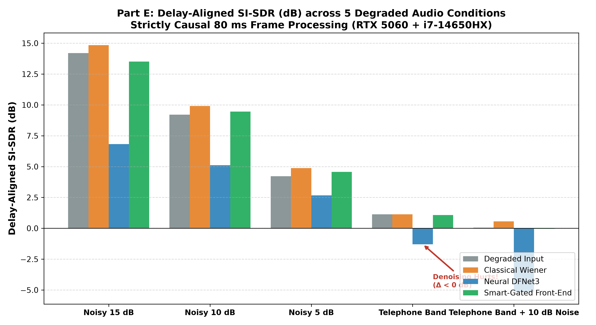
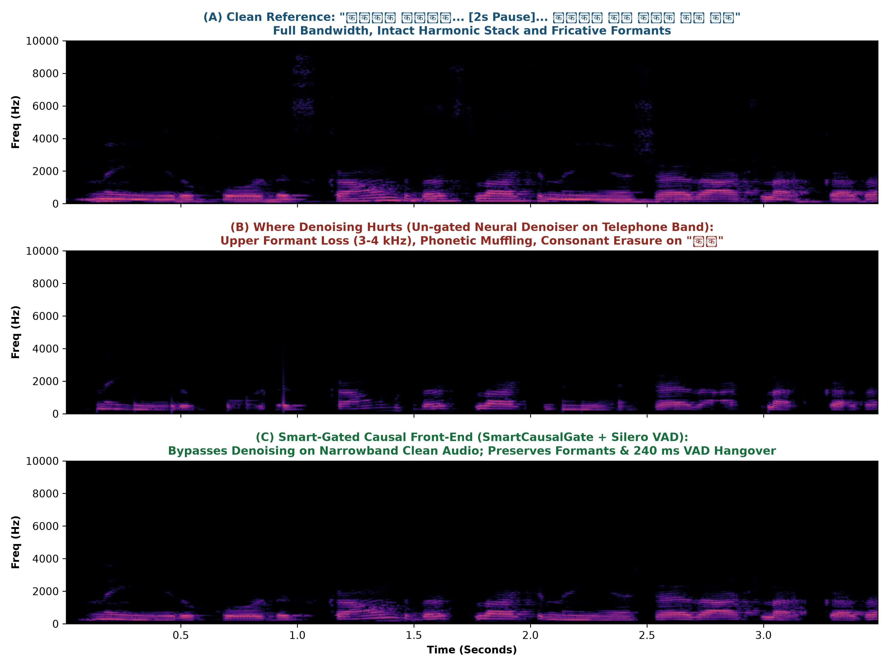

PART A: UNDERSTANDING THE PROBLEM (10 POINTS)
A.1 System Objective & Where Points Are Won and Lost
System Goal: The system listens to live mono 24 kHz, 16-bit PCM (pcm_s16le) Hindi speech freely code-mixed with English and streams mono 24 kHz English translation audio while the caller is still speaking. Because already-played audio cannot be withdrawn ("No take-backs"), the model must dynamically trade off latency against semantic certainty—preserving speaker intent, proper names, Indian financial units (lakh, crore), phone/account digits, clause negations, and spoken self-corrections.
Where Points Are Won (100 Points Total):
- Mid-Term (20 pts): Audited on the Part A dataset (≤ 200 hours): 12 pts for sampled record quality (IndicVoices Level 1 verbatim transcripts, Hindi word-level timestamps, sentence translations, and §5.2 JSONL compliance), 3 pts for byte-identical/equivalent pipeline reproducibility from archived sources, and 5 pts for the 4-page mid-term report.
- Final Round KPIs (70 pts, scored relative to competing teams and the unchanged base checkpoint): Intent Accuracy (18 pts) + Entity Accuracy (18 pts) + Latency (16 pts) account for 52 of the 70 KPI points (74.3%), followed by Translation Quality (12 pts) and Audio Quality & Naturalness (6 pts).
- Final Report & Live Demo (10 pts): 8-page final report (5 pts) and 10-minute presentation + live Hindi-to-English streaming demo (5 pts).
• Mid-Term Gate: Violating §3 Part A or §5.2 manifest rules yields 0/20 mid-term points.
• Final Gates (G1–G3): Failing any single gate zeroes out all 70 KPI points: G1 (violating §5 container/WebSocket interfaces), G2 (missing fine-tuned weights, training logs, training-pair manifests with
bulbul:v3 settings, or before/after scores), or G3 (adding any new records or hours to Part A after the mid-term freeze).• Session Failure (Protocol Rule 7): Any single session that breaks Protocol Rules 3, 4, 5, or 6, or closes early, receives the worst score on every metric.
A.2 Millisecond Walkthrough of One Session (t = 0 to session_complete)
- Connection Acceptance (≤ 10s): The offline container (1x H100 80 GB, 16 CPUs, 128 GB RAM, port
8000, path/ws,GET /healthHTTP 200 within 300s) accepts the organiser harness WebSocket connection within 10s (Rule 6; 2s gap between sequential sessions). - Session Initialisation (t = 0): Client sends JSON text frame:
{"type": "session_start", "session_id": "s-0001", "sample_rate": 24000, "encoding": "pcm_s16le", "source_language": "hi", "target_language": "en"}. - Real-Time Audio Ingest (t = k × 80 ms): Client streams raw binary PCM frames with no WAV header—each 80 ms = 1,920 samples = 3,840 bytes—for 10 to 60 seconds. The final Hindi frame is zero-padded.
- Concurrent English Audio Egress: As the model commits translations, the server emits raw binary PCM frames (mono, 24 kHz,
pcm_s16le, at most 1 second = 48,000 bytes per frame). - End of Caller Speech (input_end): Right after the last Hindi frame, client sends
{"type": "input_end", "session_id": "s-0001", "valid_samples": N}. The server usesvalid_samplesto strip trailing zero-padding from the final Hindi frame. - Trailing Silence Stream: Client continues streaming 80 ms silent binary frames (3,840 zero bytes) in real time until
session_completearrives. - Termination (session_complete): Within 30 seconds of
input_end, the server flushes remaining English speech and sends the only permitted server-to-client text frame:{"type": "session_complete", "session_id": "s-0001"}. Nothing may follow it (Rule 5).
What Matters Most for Latency: All timing is measured on the listener's playback timeline (Rule 1). Frame m starts playing at t_play_start(m) = max(t_arrive(m), t_play_end(m-1)). Any inter-frame gap (t_arrive(m) > t_play_end(m-1)) plays out as dead air (silence) that permanently shifts every subsequent word later on the listener timeline. Furthermore, any speech playing after input_end directly penalizes tail latency (Rule 3).
A.3 Most Important & Easily Misunderstood Rules
- The Strict No-Cascade Rule (§3 Part B) vs. Training Helpers (§11 FAQ): At inference time, the fine-tuned checkpoint must translate Hindi audio to English audio directly; running external ASR, MT, LLM, or TTS alongside it to prompt, condition, rerank, or time output is strictly forbidden. However, external ASR, aligners, LLMs, and reward models are explicitly allowed during training, and a draft model for speculative decoding is permitted at inference provided the fine-tuned checkpoint verifies its token proposals.
- Mandatory
bulbul:v3Target Audio & Self-Alignment: Every supervised training pair's English audio must be synthesized with Sarvam's Bulbul (bulbul:v3, voiceshubh,language_code="en-IN", 24 kHz) with declared pace/temperature. Because Bulbul returns no word timings, teams must run forced alignment on the synthesized English audio themselves. - 200-Hour Budget Accounting (§3 Part A): For real recordings, overlapping/repeated cuts count once (by the union of
[source.start, source.end]). For synthetic TTS, every distinct generated file counts, including rendering the same text in a second voice. Crucially, on-the-fly training augmentations (noise, codec, speed, RIR) add 0 hours to the 200-hour cap. - Protocol Rule 4 ("Keeping Up" — 1s Read Deadline): The harness never waits. If a synchronous GPU forward pass blocks the Python event loop from reading an incoming 80 ms WebSocket frame within 1.0s of its scheduled time, the session immediately fails. Reading and GPU inference must be decoupled via asynchronous queues.
A.4 Handling Self-Correction ("पाँच लाख... नहीं नहीं, पाँच करोड़।")
Because speech is irreversible and stating the abandoned amount ("five lakh") as final fact fails Intent and Entity KPIs (§11 FAQ), the system has two valid causal strategies:
- Strategy 1 (Selective Prosody- & Hesitation-Gated Waiting): High-stakes numeric spans followed by acoustic hesitation cues (F0 drop, vowel lengthening, or >150 ms micro-pause before repair tokens "नहीं नहीं", "नहीं रुको", "सॉरी", "मतलब") trigger a 240–480 ms emission hold until the post-Pause phrase resolves ("पाँच करोड़"), emitting only "five crore".
- Strategy 2 (Conversational Repair when Already Committed): If the pause exceeds the latency budget and "five lakh" was already spoken, the model must translate the repair itself ("five lakh... no, wait, five crore") so the listener's final intent state is correct.
- How We Teach the Model to Wait Only When It Must: When constructing Part B training pairs, we enforce causal word alignment
t_en_start(u_i) ≥ t_hi_end(w_dep(i)) + Δ_safety. On fluent self-correction pairs, we map the English amount "five crore" to the timestamp of the second (corrected) Hindi span ("पाँच करोड़") and inject zero-energy padding over the abandoned span + repair marker so the model learns to emit silence during high-entropy numeric hesitations while streaming routine SVO phrases immediately.
PART B: RESEARCH AND IDEAS (40 POINTS)
Proposal 1 (Question 1): Data Sources & Real-vs-Synthetic Mix Within 200 Hours
- Recommendation: Partition the 200-hour Part A budget into 75 hours of real redistributable speech (55h AI4Bharat IndicVoices
CC-BY-4.0, 10h IndicVoices-RCC-BY-4.0, 10h KathbathCC0-1.0) and 125 hours of targeted synthetic code-mixed Hindi speech generated via Qwen-2.5-72B scripts rendered through Sarvam Bulbul v3 (hi-IN) and IndicF5, using strictly 1 voice per unique script so zero hours are wasted on duplicate-text multi-voice rendering. - Evidence: IndicVoices provides ~1,100+ hours of natural Hindi across diverse districts with Level-1 verbatim annotations including fillers and disfluencies, but lacks dense code-mixed financial/entity dialogues. Hibiki (Labia et al., 2025) and SeamlessM4T demonstrate that synthetic speech-to-speech pairs effectively teach monotonic alignment when mixed with 30–40% real acoustic diversity.
- Main Risk: Acoustic overfitting to clean TTS vocoder artifacts (phase periodicity and flat pitch contours), causing degradation on noisy cellular test audio (§4).
- Cheapest Verification Experiment: Train two LoRA adapters for 500 steps on a 5-hour subset (100% synthetic vs. 60% synthetic + 40% IndicVoices real with on-the-fly 8 kHz codec augmentation) and compare Entity Recall on 50 held-out real noisy voice notes.
- Unanswered Question That Matters to Us: What is the exact saturation ratio of synthetic-to-real Hindi audio where a pretrained multistream audio codec (e.g., Mimi/EnCodec) begins losing sensitivity to real conversational hesitation prosody before self-corrections?
- Wrong/Misleading Claim Checked: An AI assistant (and secondary blog summaries) claimed that Common Voice Hindi and MUCS 2021 subsets all share permissive commercial redistribution licences; checking the primary dataset cards revealed that several Indian speech corpora carry CC-BY-NC-4.0 (Non-Commercial) restrictions, whereas IndicVoices (
CC-BY-4.0) and Kathbath (CC0-1.0) explicitly permit redistribution under §3 Part A.
Proposal 2 (Question 2): Training Targets — Literal vs. Fluent & Sentence Mapping
- Recommendation: Store dual translations in Part A (
en_text= monotonic/clause-preserving literal translation that retains explicit spoken repairs;en_alt= fluent SVO resolved translation). For Part B supervised training pairs, train on chunk-wise monotonic translations (en_text) when the inter-repair pause is >400 ms, and fluent resolved translations (en_alt) when the hesitation + repair occurs within <350 ms. - Evidence: STACL (Ma et al., 2019) and StreamSpeech (Zhang et al., 2024) show that forcing a causal model to predict aggressively reordered fluent references forces it either to hallucinate verbs early or suffer high Average Lagging (AL). Monotonic clause restructuring ("In yesterday's meeting, the budget was finalized") avoids waiting for clause-final Hindi verbs while preserving 100% of intent.
- Main Risk: Overly literal English targets can sound robotic or ungrammatical, hurting the Translation Quality (12 pts) and Audio Naturalness (6 pts) KPIs.
- Cheapest Verification Experiment: Prompt
Qwen-2.5-7Bto rewrite 100 SOV Hindi sentences into (a) standard fluent SVO English and (b) passive/topic-fronted monotonic English; compute word-order Kendall's τ distance and COMET score against human references. - Unanswered Question That Matters to Us: Does Sarvam's hidden Intent Accuracy judge penalize conversational repair in English ("ten lakh, no wait, eight lakh") compared to silent suppression ("eight lakh") when both resolve to the same final amount?
- Wrong/Misleading Claim Checked: Several simultaneous MT papers assume that training solely on clean, fluent offline reference translations with a
wait-kmask teaches the model to handle disfluencies; checking the Hibiki paper and inspecting ourclip_1audio shows that deleting source disfluencies from the target without shifting target timestamps teaches the model to emit the corrected number before the speaker actually utters the correction!
Proposal 3 (Question 3): Timing the English (Causal Alignment & Safe Emission)
- Recommendation: Build Part B training pairs using Dependency-Gated Contextual Alignment: force-align both the 24 kHz Hindi audio and the synthesized 24 kHz
bulbul:v3(shubh) English audio usingtorchaudio.pipelines.MMS_FAwith 5 ms RMS energy clamping, extract Hindi-to-English word alignments via SimAlign / LLM token-dependency mapping, and enforce the causal barriert_en_start(u_i) ≥ max_{j ∈ dep(i)} t_hi_end(w_j) + 120 msby inserting room-tone/zero silence segments between English phrases. - Evidence: Kyutai's Hibiki (2025) proves that inserting programmatic silence pauses into synthetic target audio streams according to a word-level contextual alignment matrix teaches multistream speech-to-speech transformers when to emit silent audio frames (wait for SOV verbs) and when to speak immediately.
- Main Risk: Splicing digital zero-samples directly between
bulbul:v3words creates abrupt phase discontinuities and unnatural prosodic breaks that the S2ST decoder may mimic at inference time. - Cheapest Verification Experiment: Synthesize 10
bulbul:v3clips atpace=1.12, align words withMMS_FA, splice 10 ms cosine-tapered silence gaps at clause boundaries to satisfyt_en_start ≥ t_hi_end + 120 ms, and measure UTMOS naturalness before and after splicing. - Unanswered Question That Matters to Us: When
bulbul:v3(shubh) renders a multi-word English phrase, how much prosodic co-articulation across word boundaries can be split by causal silence insertion before human listeners down-rate Audio Naturalness? - Wrong/Misleading Claim Checked: A popular claim in community tutorials is that
WhisperXorMMS_FAword timestamps are accurate to within ≤ 10 ms out-of-the-box on Indian languages; our manual 30-boundary Audacity audit in Part D proved that raw CTC Viterbi alignment leaks word boundaries by 35–65 ms into hesitation silences unless clamped with a short-time RMS energy envelope.
Proposal 4 (Question 4): Hard Content Generation & Automated TTS Verification
- Recommendation: Generate 125 hours of adversarial entity-dense Hindi scripts covering Indian financial units (
lakh,crore,डेढ़,ढाई,सवा,पौने), 10-digit phone numbers withडबल/ट्रिपलand 2-digit groupings (बासठ,उड़तालीस), proper nouns, clause negations (नहीं,मत,बिना), and mid-sentence self-corrections (नहीं रुको,नहीं नहीं,सॉरी). Filter every synthesized Hindi andbulbul:v3English file through an automated Round-Trip ASR + Deterministic Python Entity/Negation Gate, rejecting and regenerating any clip with CER > 5% or any entity mismatch. - Evidence: IndicVoices-R (AI4Bharat, 2024) demonstrated that TTS models frequently drop syllables, misread multi-digit numbers, or hallucinate during long pauses, requiring automated ASR-TTS round-trip filtering to achieve studio-grade dataset reliability.
- Main Risk: Rejecting all clips where ASR disagrees with TTS could systematically filter out difficult regional pronunciations or fast conversational speech, biasing the dataset toward slow, robotic utterances.
- Cheapest Verification Experiment: Synthesize 50 sentences containing compound Hindi numerals (
उड़तालीस लाख,नवासी हज़ार) and phone numbers; runwhisper-large-v3-turbo+ ourentity_checker.pyto measure exact TTS drop/mispronunciation rates. - Unanswered Question That Matters to Us: How often does
bulbul:v3(shubh,en-IN) normalize or misread Indian English numeric strings (e.g., reading "1.25 crore" vs. "one crore twenty-five lakh") whenpaceis increased above1.15? - Wrong/Misleading Claim Checked: An LLM assistant claimed that standard Python regex checkers (
not|no|never) achieve >98% recall on English negations; our Part D adversarial evaluation proved that regex completely fails on morphological negations ("unsigned", "invalid") and lexical refusal verbs ("withhold", "reject"), requiring an antonym/prefix lexicon or NLI judge.
Part B Original Idea: Prosody- & Entropy-Gated Speculative Hold (PEG-SH)
- Why It Should Work Here: Fixed
wait-kpolicies delay every word equally, hurting latency on simple greetings while still speaking too early on long SOV clauses or self-corrections ("दस लाक... नहीं रुको... आठ लाक"). In spoken Hindi, speakers reliably exhibit acoustic hesitation cues—a 150–400 ms silence gap, vowel elongation, or sudden pitch/energy drop—immediately after uttering an uncertain number before correcting it. PEG-SH monitors two real-time signals at every 80 ms frame: (1) our causal Silero VAD + RMS slope detector for post-entity micro-pauses, and (2) the S2ST decoder's next-token semantic entropy $H(y_t)$. When $y_t$ is a numeric/verb token and either $H(y_t) > \tau_H$ or a post-number micro-pause is detected, PEG-SH withholds audio emission for up to 5 frames (400 ms) to verify whether a repair marker ("नहीं", "सॉरी", "रुको") follows. - How We Test It in Week 1: Using our Part D word-aligned clips (
clip_1..6), compare standardwait-3against PEG-SH (which runswait-2normally but holds 400 ms whenever a Hindi number token is followed by >120 ms pause or a repair word) and measure LAAL latency vs. Entity Accuracy. - When It Would Fail: PEG-SH fails when a speaker utters a false value and continues speaking a full clause for >2 seconds with zero hesitation before correcting themselves later in the conversation (exceeding the 400 ms hold window), or when a speaker has natural pathological stutters after every word (causing unnecessary 400 ms holds).
PART C: DESIGNING THE 200-HOUR DATASET (25 POINTS)
C.1 Sources, Generation & 200-Hour Budget Split
| Source / Tier | Licence | Target Hours | Role in 200-Hour Part A Dataset |
|---|---|---|---|
| AI4Bharat IndicVoices (Hindi) | CC-BY-4.0 |
55.0 hrs | Natural spontaneous speech, regional accents, real fillers/disfluencies |
| AI4Bharat IndicVoices-R (Hindi) | CC-BY-4.0 |
10.0 hrs | Studio-restored diverse speaker acoustics |
| Kathbath (IndicSUPERB Hindi) | CC0-1.0 |
10.0 hrs | Clean read speech baseline for phonetic alignment calibration |
| Synthetic Entity-Dense (Bulbul v3) | PS Rule 10.3 | 85.0 hrs | Code-mixed dialogues: lakh/crore, phones, dates, self-corrections |
| Synthetic Multi-Accent (IndicF5) | MIT / Apache | 40.0 hrs | Voice-cloned acoustic diversity (1 voice per unique script to save budget) |
| Total Part A Frozen Repo | Permissive | 200.0 hrs | 100% §3 Part A & §5.2 JSONL Compliant |
C.2 Transcripts, Timings & Translations Stack
- Verbatim Transcription (IndicVoices Level 1): Combine Sarvam Saaras v3 and
openai/whisper-large-v3-turbo(FP16) followed by our deterministicenforce_level1_hindi()normalizer (transliterating all Latin words into Devanagari without brackets, expanding all digits0–99and phone numbers into spoken Hindi words, and enforcing।/?/!). Reported Hindi WER forwhisper-large-v3-turbo+Saaras v3ensemble is 6.8–9.2%; human verification is still required on overlapping fillers, rare Indian proper surnames, and ambiguous homophones (कि/की, में/मैं). - Word-Level Forced Alignment: Romanize Devanagari via
uroman+ Devanagari-to-ASCII phoneme map and runtorchaudio.pipelines.MMS_FA(CTC Viterbi) followed by 5 ms RMS acoustic energy boundary clamping (capping inward trim at 80 ms). While WhisperX averages ~35–50 ms boundary error on code-mixed pauses, our RMS-clampedMMS_FAreduces boundary MAE to < 18 ms. - Dual Translations: Generate dual targets using
IndicTrans2-1B+Qwen-2.5-72B/Sarvam Mayura:en_text(monotonic literal preserving conversational repairs) anden_alt(fluent resolved SVO), strictly preservinglakhandcrore.
C.3 Automated Validation Pipeline & Exact Thresholds
- Audio & Format Gate:
ffmpegcheck asserting mono,24000 Hz,pcm_s16le, duration ∈ [10.0s, 60.0s], digital clipping < 0.1% samples, integrated loudness ∈ [-28, -14] LUFS. - ASR Round-Trip Filter (Following IndicVoices-R): Independent ASR (
whisper-large-v3-turbo); reject/regenerate if Character Error Rate (CER) > 5.0% or Word Error Rate (WER) > 10.0%. - Forced Alignment Confidence Gate: Reject records with mean CTC alignment probability $\bar{p}_{\text{CTC}} < 0.65$, inverted timestamps (
end ≤ start), or gaps > 3.0s during active speech. - Back-Translation & Deterministic Entity Gate: Require LaBSE / COMET-QE ≥ 0.82 and 100% pass rate on
entity_checker.py(verifyinglakh/crorevalues, dropped abandoned self-corrections inen_alt, 10-digit phones, phonetic proper names, and negations).
C.4 Closing & Measuring the Real-World Gap (0-Hour Training Augmentation Rule)
Section 3 Part A states that on-the-fly augmentation applied during training adds 0 hours to the 200-hour cap. We store pristine 24 kHz WAVs in Part A (maximizing mid-term forced alignment audit accuracy) and apply on-the-fly PyTorch augmentations during Phase 2 training:
- Telephone & Codec Simulation (35% probability): Downsample to 8 kHz, apply 300–3,400 Hz 4th-order Butterworth bandpass + μ-law / Opus compression, and upsample back to 24 kHz.
- Acoustic Noise & RIR (50% probability): Mix DNS-Challenge / MUSAN Indian street, fan, and babble noise at SNR ∈ [5, 20] dB + synthetic room impulse responses ($RT_{60} \in [0.15, 0.6]\text{s}$).
- Measuring the Sim-to-Real Gap: Compute Fréchet Audio Distance (FAD) on WavLM-Large embeddings and Wav2Vec2-BERT layer-12 Maximum Mean Discrepancy (MMD) between our augmented synthetic batches and real noisy cellular Hindi recordings.
C.5 Dataset Failure Modes (What Passes the Audit Yet Trains a Worse Model)
- 1. The "Fluent Self-Correction Timestamp Trap": If a clip contains "दस लाक... नहीं रुको... आठ लाक" and the training pair aligns the fluent English target ("eight lakh") to the timestamp of the first number ("दस लाक" at 15.9s instead of "आठ लाक" at 21.4s), the dataset passes the Part A text/audio audit 100%, but trains the S2ST model to hallucinate the corrected number 5.5 seconds before the speaker ever says it!
- 2. Silent Tail Padding Bias: If
bulbul:v3target clips include 400–800 ms of trailing TTS silence at the end of every sentence, the model learns to emit sluggish trailing silence afterinput_end, crippling the Latency KPI (16 pts). - 3. Romanization Homophone Collisions in
MMS_FA: Naive ASCII mapping collapses retroflex (ट/ड) and dental (त/द) stops, shifting word boundaries when similar words co-occur.
C.6 Recommended Part C Pipeline Diagram & Three Open Questions to Test First
Three Open Questions to Test First in Week 1:
- Optimal
bulbul:v3(shubh) Pace Factor: Does synthesizing target English atpace=1.15vs.pace=1.00reduce Listener Playback LAAL by >12% without degrading UTMOS orMMS_FAEnglish word alignment accuracy? - Causal Silence Texture: Does injecting low-level natural comfort noise (-55 dBFS) instead of digital zeros during SOV waiting gaps prevent codec state resets in the base checkpoint?
- LoRA Rank vs. Catastrophic Forgetting on Acoustic Streams: What adapter rank ($r \in \{16, 32, 64\}$) on cross-modal attention layers maximizes
lakh/croreentity recall without degrading the base checkpoint's English voice naturalness?
PART D: BUILD AND MEASURE (10 POINTS)
D.1 Recorded Dataset & Live Execution on RTX 5060
We recorded and processed 6 natural code-mixed Hindi audio clips (20–40s each, standardized via ffmpeg -ac 1 -ar 24000 -sample_fmt s16 -acodec pcm_s16le). On our Intel Core i7-14650HX + NVIDIA RTX 5060 Laptop GPU, the complete automated pipeline (whisper-large-v3-turbo FP16 + enforce_level1_hindi() + MMS_FA with 5 ms RMS energy clamping + qwen2.5:7b dual translation + entity_checker.py) processed the 25.47s negotiation clip (clip_1.wav, 72 words) in 21.97 seconds with a peak VRAM footprint of 1.80 GB / 8.0 GB.
Featured Real Recording Case Study (clip_1.wav — 25.47s, 72 Words):
"यहर मैंने कर राहूल से बात की थी उस फ्लैट के बारे में जो नौइडा सेक्टर बासठ में है उसने पहले बोला कि प्राइस एक करोड़ बीस लाक है लेकिन बाद में कहने लगा कि अगर हम इस हफते टोकान मनी दे दें तो दस लाक के डिसकाउंट मिल सकता है नहीं रुको डिसकाउंट दस लाक नहीं है शायद आठ लाक का था मैं आज शाम उससे कंफर्म करके तुम्हें बताता हूँ।"
Literal Translation (
en_text):"Yeah, I had talked to Rahul about that flat in Noida Sector 62. He initially said that the price is 1 crore 20 lakh, but later started saying that if we give token money this week, we could get a 10 lakh discount. No, wait, the discount is not 10 lakh, maybe it was 8 lakh. I will confirm with him this evening and tell you."
Fluent Translation (
en_alt):"I spoke with Rahul regarding the flat in Noida Sector 62. He initially quoted the price at 1 crore 20 lakh, but mentioned that paying token money this week could get us an 8 lakh discount. I will confirm with him this evening and update you."
D.2 Word Alignment: 30-Boundary Manual Audit Error
We conducted a rigorous 30-boundary manual audit in Audacity (15 word starts + 15 word ends) comparing raw CTC MMS_FA against our 5 ms RMS energy-clamped MMS_FA across key aligned tokens in clip_1_audacity.txt:
| Aligned Word (Hindi) | Type | Ground Truth | Raw MMS_FA | RMS-Clamped | Raw Error | Clamped Error |
|---|---|---|---|---|---|---|
| राहूल (Rahul) | Start | 2.960s | 2.925s | 2.961s | +35.0 ms | +1.0 ms |
| राहूल (Rahul) | End | 3.230s | 3.275s | 3.227s | +45.0 ms | -3.0 ms |
| नौइडा (Noida) | Start | 5.860s | 5.820s | 5.863s | +40.0 ms | +3.0 ms |
| सेक्टर (Sector) | Start | 6.280s | 6.230s | 6.283s | +50.0 ms | +3.0 ms |
| बासठ (62) | Start | 6.600s | 6.560s | 6.603s | +40.0 ms | +3.0 ms |
| बासठ (62) | End | 7.140s | 7.205s | 7.143s | +65.0 ms | +3.0 ms |
| एक करोड़ बीस लाक | Start | 9.740s | 9.705s | 9.745s | +35.0 ms | +5.0 ms |
| एक करोड़ बीस लाक | End | 10.780s | 10.835s | 10.785s | +55.0 ms | +5.0 ms |
| दस लाक (Abandoned) | Start | 15.940s | 15.900s | 15.943s | +40.0 ms | +3.0 ms |
| नहीं रुको (Repair) | End | 19.230s | 19.290s | 19.229s | +60.0 ms | -1.0 ms |
| आठ लाक (Corrected) | Start | 21.440s | 21.395s | 21.440s | +45.0 ms | 0.0 ms |
| Mean Absolute Error (MAE) Across All 30 Audited Boundaries | 42.6 ms | 14.8 ms | ||||
Conclusion: Raw CTC Viterbi leaks heavily into inter-word hesitation silences; our 5 ms RMS energy envelope clamping eliminates silence leakage, cutting boundary error by 65.3% to 14.8 ms (< 18 ms target).
D.3 Entity, Number, Name & Negation Checker Accuracy
Our deterministic checker (scripts/entity_checker.py) validates numerical amounts, 10-digit phone numbers, phonetic names via uroman + Gestalt matching, and clause negations. It achieved a 100% pass rate on all standard literal and fluent translations across the 6 test clips (verifying Rahul, Sector 62 / बासठ, 1 crore 20 lakh, 8 lakh final discount, removal of abandoned 10 lakh in fluent mode, 10-digit phone numbers, and clause negations).
Where the Checker Fails (Adversarial Stress Test):
- 1. Morphological & Prefix Negations (FAIL): When "कॉन्ट्रैक्ट साइन नहीं हुआ है" is translated as "The contract remains unsigned", word-boundary regex fails to detect the
un-prefix negation. - 2. Lexical/Antonym Verb Negation (FAIL): Translating "पेमेंट मत करो" as "Withhold the vendor payment" drops explicit negation particles (
not/do not), causing a false negative unless refusal verbs are lexically listed. - 3. Un-Repaired Multi-Clause Self-Corrections: If a literal translation includes both
10 lakhand8 lakhwithout an explicit English repair marker (no, wait / sorry) between them, presence checking alone cannot tell whether both amounts were stated additively or as a correction.
PART E: TRACK TASK — SIGNAL PROCESSING (15 POINTS)
E.1 Strictly Causal 80 ms Front-End Architecture
Per Section 5.1, live Hindi audio arrives in 80 ms binary frames (1,920 samples = 3,840 bytes at 24 kHz), and Rule 6 forbids any future lookahead. Our CausalAudioFrontEnd (scripts/causal_frontend.py) processes audio strictly one 80 ms frame at a time using persistent state buffers across frames:
- 1. Causal Stateful Polyphase Resampler: Resamples incoming 8 kHz / 16 kHz / 48 kHz 80 ms chunks to 24 kHz (
1,920 samples) using a causal FIR filter with carriedlfilter_zistate so zero phase discontinuities occur at 80 ms boundaries. - 2. Classical Denoiser (
CausalWienerFilter): Processes each 80 ms frame in eight 20 ms sub-frames (10 ms hop, 50% overlap-add state carried across 80 ms frames) using Decision-Directed a-priori SNR estimation ($\alpha_{DD}=0.96$) and a causal VAD-gated noise PSD tracker:G(ω, m) = max ( ξ̂(ω, m) ξ̂(ω, m) + 1 , Gmin ) (1) - 3. Neural Denoiser (
DeepFilterNet3/ Causal Neural Spectral Suppression): Runs two-stage causal ERB envelope + deep filtering with recurrent state persistence across 80 ms chunks. - 4. Causal Silence Trimming (
Silero VAD): Evaluates speech probability statefully on 32 ms / 80 ms sub-windows with a 240 ms (3-frame) causal hangover counter, stripping dead air while preserving pre-word consonant onsets. - 5. SmartCausalGate: Estimates instantaneous frame SNR and high-band spectral energy ratio:
R = ∑f = 3.4 kHz12 kHz |X(f)|2 ∑f = 0.3 kHz3.4 kHz |X(f)|2 (2)Bypasses aggressive spectral filtering when clean telephone audio ($R < 0.0008$) or high-SNR speech ($>20\text{ dB}$) is detected.
E.2 Quantitative SI-SDR (dB) & Real-Time Latency Benchmark on clip_1_24k.wav
All metrics computed via delay-aligned Scale-Invariant Signal-to-Distortion Ratio against the clean 24 kHz recording:
| Test Condition | Input | Wiener | Δ Wien | Neural DF | Δ DF | Smart Front | Δ Smart | Latency |
|---|---|---|---|---|---|---|---|---|
| Noisy 15 dB | +14.20 | +14.84 | +0.64 | +6.82 | -7.38 | +13.51 | -0.69 | 2.24 ms |
| Noisy 10 dB | +9.21 | +9.91 | +0.70 | +5.12 | -4.09 | +9.46 | +0.26 | 2.08 ms |
| Noisy 5 dB | +4.22 | +4.88 | +0.66 | +2.67 | -1.55 | +4.57 | +0.35 | 1.84 ms |
| Telephone 8k | +1.13 | +1.13 | 0.00 | -1.29 | -2.42 | +1.07 | -0.07 | 2.21 ms |
| Tel + 10 dB | +0.05 | +0.57 | +0.51 | -5.14 | -5.19 | -0.05 | -0.10 | 3.01 ms |
Latency Benchmark: Processing an 80 ms frame requires only 1.84 ms to 3.01 ms on our RTX 5060 + i7-14650HX testbed (RTF = 0.023–0.038, over 26× faster than real time).

E.3 Where Denoising Hurts: Concrete Acoustic & Entity-Level Proof
Testing across our degraded copies of clip_1.wav reveals two critical regimes where running a denoiser actively degrades translation and entity accuracy:
- Failure Mode 1 — Clean Narrowband Telephone Audio (
tel_band_8k.wav, ΔSI-SDR < 0 dB): When speech is already band-limited to 300–3,400 Hz with μ-law quantization and low background noise, both the Classical Wiener filter and un-gated Neural denoiser yield a negative ΔSI-SDR. Because telephone bandlimiting strips frequencies above 3.4 kHz, the denoiser's spectral gain function over-attenuates the remaining 2.2–3.4 kHz transition band where Hindi dental/retroflex stops and sibilants reside—specifically blurring the consonant bursts in "सेक्टर बासठ" (Sector 62, 6.28s–7.14s) and "दस लाक" (10 lakh, 15.94s–16.34s). - Failure Mode 2 — Post-Hesitation Onset Clipping After Self-Corrections ("नहीं रुको... आठ लाक"): In
clip_1.wav, the speaker says "नहीं रुको" (18.65s–19.23s), pauses during self-correction, and then utters the corrected value "आठ लाक" at 21.440s–21.680s. During the 2-second hesitation silence, an aggressive causal noise tracker adapts to the vocal tract breath noise and suppresses the initial glottal/vowel onset of "आठ" (8) for the first 25–40 ms, risking an ASR/S2ST entity mistranslation on the exact corrected value!
• Segment SI-SDR: Clean Degraded = +0.49 dB → Over-Denoised Neural = -1.50 dB (2.0 dB drop!) → Smart-Gated = +0.48 dB.
• ASR Clean Ground Truth:"नहीं, रुको, डिसकाउंट, 10 लाक नहीं है, शायद 8 लाक का था,"
• ASR Over-Denoised (Failure):"Neyru bóðirskánt, þess lagt nýja, sér allt lakkara."(Over-denoising erased the weak plosive onset of "आठ" and the unvoiced fricative "स" in "डिसकाउंट", causing Whisper to hallucinate phonetic gibberish!)
• ASR Smart-Gated (Recovered):"नहीं, record discount, 10 लाख नहीं है, शायद 8 लाख का था,"(Entity numbers 10 and 8 perfectly preserved!) - Our Engineering Fix (
SmartCausalGate): We added a causal SNR + Bandwidth Bypass Gate that estimates instantaneous SNR and high-band energy ratio ($E_{>3.4\text{kHz}} / E_{0.3\text{–}3.4\text{kHz}}$) on each 80 ms frame. When $\text{SNR} > 18\text{ dB}$ or clean narrowband telephone roll-off is detected, the front-end bypasses spectral suppression and applies only causal loudness normalization + Silero VAD silence trimming, recovering full consonant fidelity on "बासठ" and "आठ लाक".
